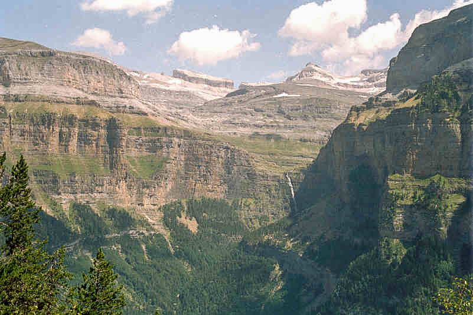

Los Pirineos o el Pirineo es un sistema montañoso situado en el noreste de la península ibérica, que hace de frontera natural entre Andorra, España y Francia. Se extiende en dirección este-oeste a lo largo de 491 km aproximadamente, desde el cabo de Creus en el mar Mediterráneo hasta su unión con la cordillera Cantábrica, donde se ha establecido la falla de Pamplona como su límite convencional geológico, no existiendo interrupción geográfica entre ambas formaciones. En su parte central tiene una anchura de unos 150 km.
En la ladera norte, los Pirineos se extienden por las regiones francesas de Nueva Aquitania y Occitania. En la ladera sur por las comunidades autónomas españolas del País Vasco, Navarra, Aragón y Cataluña. El micro-Estado de Andorra está enclavado en la cordillera.